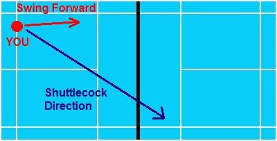
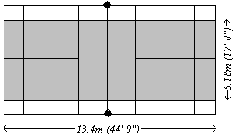

1.1 A badminton court supposed to be a rectangle and marked the edge as white colour with 4cm wide shown in the
Diagram 1.
1.2 The white line at the edge of the whole court is 950cm to 990cm on the left right and 530cm to 570cm on
the front and back.
1.3 The Net at the middle of the court is 150cm height for the surface. The Net shall be placed at the middle
and vertically as the
Diagram 1.
1.4 The Net shall be made by string and drack colour. The thickness and the Net whole should not less than 15mm
and not more than 20mm.
1.5 The length wide of the Net is about 610cm long and 76cm wide. If necessary, there should not leave any gap
between the net and the posts.
Diagram 1
2.1 A match is set for 3 games and the winner will be choose from the highest point player or team.
2.2 A standard game usually is 21 points, the first player who get the all 21 points will be the winner.
2.3 Referee can set a final game if after 3 games both site haven come out with the highest mark that has 2-points
different from another.
2.4 The side who won the previous games will get the priority to start in the next game.
3.1 Players must change the place to opposite at the end of first game.
3.2 When reach the end of second games, if there is a result for the match, else both site players should exchange
place for the third games.
3.3 If come to the third games, both site players need to exchange place again at the first 11 point.
4.1 If the start ball player score a 0 or even number, player shall starts from right site
(Diagram 2).
4.2 If the start ball player score an odd number, player shall starts from left hand site
(Diagram 3).
4.3 Both site player limit into 1person battle to another.
4.4 If the shuttlecock touched out of the grey colour box as the
(Diagram 4), it means out and the point gain by the receiver.
Diagram 2
Diagram 3
Diagram 4
5.1 The starting game is beginning from the right-hand site.
5.2 If the start ball player scores a 0 or even number, player shall start from right site.
5.3 If the start ball player scores an odd number, player shall start from left hand site.
5.4 If the attacker sends the shuttlecock outside of the white perimeter edge, it’s consider as “OUT”. The opposite
will get a point.
6.1 If the shuttlecock touches the floor, the shuttlecock cannot continue playing until the referee give instruction.
6.2 If the game come out any “fault”, referee has the permission to pause the games until the next notify.